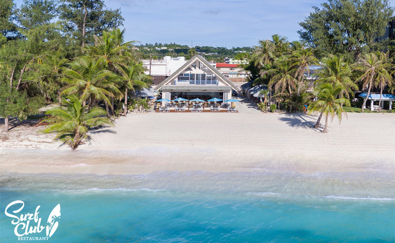

Angry Penne is a restaurant specializing in italian cuisine. Many would name it their favorite restaurant in the island for many reasons. One of them being that their pasta is freshly made everyday and their pizzas are to die for. There is really no other restaurant that can compare to the simple yet delicious flavors they present. Not to mention their awesome customer service!


Amongst the numerous Thai restaurants on the island, Wild Bills wins the best in our book. Wild Bills never falls off its throne. While many restaurants on island continue to update their menus and taste in their dishes, the rich flavors of the traditional Thai food in Wild Bills is consistent. Out of all the Thai restaurants, Wild Bills is the most flavorful.

Saipan is one of Korea's favorite summer destinations. With that, there are many restaraunts that offer comfort Korean food available on-island. My favorite of all of them is Nam Dae Mun. With prices hard to beat and flavors hard to find in other K-restaurants, Nam Dae Mun makes it to the top 3.

How can you say 'No' to sushi? There is no doubt as to why The Sushi Spot wins 1st place for Best Sushi under the Best of the Marianas. The Sushi Spot offers the best variation of sushi on-island as well as the most flavorful. I mean look at those plates! When visiting or living Saipan, do not overlook it for its small space.You will be amazed.

Last but not least, Surf Club wins for best ambience and fusion food.jdkfghnjkewghnrjrkebgwhjberghjerwbghjlwebrghjlewrbghjberwhjvbewhjbgvjrhlewbgjlherwbjhge